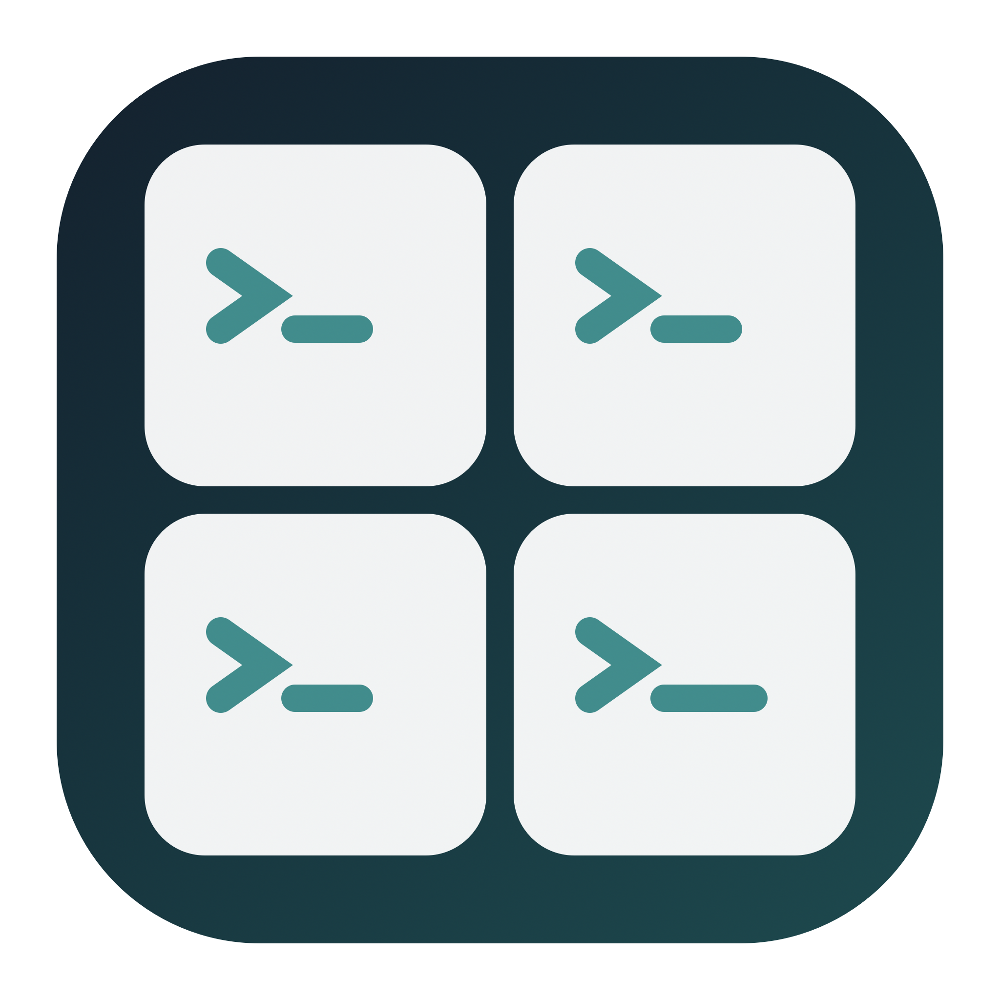

TermYes
终端统一管理，危险指令及时拦截。
面向系统 Terminal 与 Agent 命令守卫的原生 macOS 菜单栏工具。

English · 简体中文
TermYes 将 Termosaic 的终端画布与 bypass-yes 的命令守卫整合到一个应用：集中查看现有 Terminal 会话，隐藏窗口但不中断进程，并在菜单栏统一安装或恢复各 Agent 的 Shell 守卫。
先自动进入 YOLO，再硬拦危险。 TermYes 会检测已安装的 Agent，把支持权限模式的客户端修复为 YOLO/等效免确认，只支持启动参数的客户端使用受管 wrapper；危险命令仍由失败关闭的守卫硬拒绝。适配器 Hook 的真实客户端行为仍需验证。
AgentGuard/danger-policy.json（离线时使用已验证缓存或内置规则）及 AgentGuard/core.py 中 rm -rf 目标分级命中的命令；有效命令未命中清单就放行，不让 AI 二次否决。22:00–08:00 静音只关闭提示音，不降低拦截强度。⌘O；若要保留其他应用的“打开”命令，请修改它。支持 macOS 13+，同时提供 Apple Silicon 与 Intel 架构。
dist/TermYes-v1.6.40-macOS.dmg。社区版本采用 ad-hoc 签名，尚未经过 Apple 公证。如果 macOS 阻止首次启动，请在确认信任该版本后使用系统针对该应用的“仍要打开”流程；不需要关闭系统级安全保护。
窗口管理功能不需要 Python 或 Node.js。可选的命令守卫模块需要可用的 /usr/bin/python3，开发机上由 Xcode Command Line Tools 提供；应用不会自动安装依赖。在线更新需要网络连接。
GitHub 仓库现更名为 zzusec/TermYes。旧的 Termosaic 链接会重定向到新仓库；Bundle ID、配置目录和兼容安装包名称保持不变。
Termosaic-v1.6.40-macOS.dmg 旧版更新兼容包。二者包含相同的已签名 TermYes 应用，仅外层应用目录名对应不同更新器的预期；发布版本时与正式安装包一同上传。Termosaic.app，应用显示名称则为 TermYes。请勿同时运行新旧两个副本。| 菜单操作 | 快捷键 |
|---|---|
| 全局呼出并重新平铺 | 默认 ⌘O，可修改 |
切换到其他应用时保持普通窗口层级，可将访达等窗口叠在终端上方并直接拖入文件；在菜单中隐藏画布不会停止窗口内的进程。TermYes 只管理 Apple 系统 Terminal.app，不管理 iTerm2 或其他终端模拟器。
在「自动排列」中可显示或隐藏终端；配置的全局快捷键用于呼出并在鼠标所在显示器重新平铺。TermYes 不会向现有 Agent 会话自动或手动发送「继续」。
定时继续 → 设置首次时间可设置起始时间，勾选 Claude、Codex 或两者。TermYes 运行期间每五小时检查所选 Agent 的守卫，再打开专用 Terminal 窗口，让每个 Agent 恢复各自目录下最近一次会话并发送「继续」，在窗口中显示模型的实际回复，本轮完成后自动关闭这些专用窗口（不影响用户自己的终端窗口）；不注入用户正在输入的交互会话——Codex 用后台 exec 恢复已记录的会话，Claude 用独立 print 模式进程。立即发送继续与 Timer 共用同一条执行路径，可不等五小时直接验收。继续请求消耗模型用量，成功不能保证供应商或账号的额度窗口重置，应用退出后不会定时触发。
TermYes 启动后每 5 分钟检查检测到的客户端，并维护 YOLO/等效权限模式与命令守卫文件。在「命令守卫」菜单可查看各项配置与实测状态，修复配置后仍需实测通过才能打钩；守卫更新后请重启对应客户端，Codex 还需要在 /hooks 中检查并信任新 Hook。
内置适配器覆盖 Claude Code、Codex、CodeBuddy、zcode、pi、Qoder、Gemini CLI、Cursor、agy、OpenCode、Factory droid、Crush 和 GitHub Copilot CLI。
限时免审不会卸载 Hook、删除 wrapper 或改回逐次权限确认。暂停状态写入本机私有记录，每次调用守卫时检查 UTC 到期时间；恢复后仍需要客户端已加载 Hook 才能实际拦截。暂停期间不运行该 Agent 的端到端验证，也不显示保护通过。首次升级到支持暂停的版本后，旧会话需重启以加载新守卫。
Agent 更新只使用已确认的包管理器或客户端更新入口，并复查安装后的版本。无法确认安装归属、需要提权或暂不支持自动更新的客户端会保留版本/错误说明，不会下载不明脚本或切换发行渠道。插件仅使用客户端实际支持的更新命令。更新失败不阻止其他 Agent 的检测，现有会话可能仍使用旧进程，升级后请重启对应客户端。
| 情况 | TermYes 的处理 |
|---|---|
| 命中危险或警告规则 | 直接拒绝，不弹确认 |
| 输入无效，或捕获到守卫/桥接错误 | 返回拒绝，不静默放行 |
| 未命中危险规则 | 交回客户端原有权限流程 |
| 检测到客户端 | 修复 YOLO/等效权限模式并安装命令守卫；Hook 实际加载仍需验证 |
| 安装后文件被外部修改 | 拒绝自动覆盖或恢复 |
“已安装”不等于“正在受保护”。 所有适配器目前均处于真实客户端待验证状态；Copilot 的宿主超时处理与 agy 的 turbo 模式存在已知或尚未解决的兼容性问题。Hook 未加载、未信任、被禁用或宿主超时，都可能使守卫失效。
这是 Shell 命令文本的事故防护层，不是沙箱。它无法完整理解任意 Python、SQL、远程程序、别名或脚本的实际行为，也不拦截独立的文件编辑或 MCP 工具。safe 只表示“未命中规则”，不是“已经证明安全”。
安装器合并默认用户级配置、保留其他 Hook，并保存私有恢复记录；启动协调会开启受支持的 YOLO/等效权限模式，只能通过启动参数控制的客户端使用受管 wrapper。不管理自定义配置根目录或项目级配置。路径、错误边界和命令行用法见守卫文档。
不提供 Ctrl-C 自动确认或 AI 审批。 普通命令采用 YOLO／等效免确认，危险命令按清单硬拦截；原生 Ctrl-C 与业务弹窗保持人工操作。
构建需要 Xcode Command Line Tools。守卫测试使用 Python；插件测试需要已安装、支持 node:module.stripTypeScriptTypes 的 Node.js，CI 使用 Node.js 24。
# 只构建，不替换已安装应用。
SKIP_INSTALL=1 ./build.sh
# 生成主安装包、旧版兼容包及可移植的 SHA-256 校验文件。
./create-dmg.sh
/usr/bin/python3 -B Tests/test_release.py
应用位于 build/TermYes.app；安装包和校验文件位于 dist/。直接运行 ./build.sh、不设置 SKIP_INSTALL=1 时，会安装到 /Applications/TermYes.app。
PYTHONDONTWRITEBYTECODE=1 /usr/bin/python3 -B Tests/test_agent_guard.py
PYTHONDONTWRITEBYTECODE=1 /usr/bin/python3 -B Tests/test_quiet_hours.py
bash AgentGuard/test.sh
PYTHONDONTWRITEBYTECODE=1 bash AgentGuard/test-codex.sh
node Tests/test_guard_plugins.mjs
swiftc Sources/ContinueSchedule.swift Tests/ContinueScheduleTests.swift -o /tmp/termyes-continue-tests
/tmp/termyes-continue-tests
PYTHONDONTWRITEBYTECODE=1 /usr/bin/python3 -B Tests/test_continue_task.py
swiftc Sources/GridLayout.swift Tests/main.swift -o /tmp/termyes-grid-tests
/tmp/termyes-grid-tests
swiftc Sources/SemanticVersion.swift Tests/VersionTests.swift -o /tmp/termyes-version-tests
/tmp/termyes-version-tests
swiftc Sources/SemanticVersion.swift Sources/GitHubReleaseLocation.swift Tests/ReleaseLocationTests.swift -o /tmp/termyes-release-location-tests
/tmp/termyes-release-location-tests
bash Tests/test_update_installer.sh
守卫测试只分类命令字符串，不执行危险指令。插件测试模拟宿主 API，不代表真实客户端 YOLO 模式已通过验证。发布测试只读挂载安装包，并在临时副本上测试更新器，不启动应用。
TermYes 在启动后及之后每两小时检查公开 GitHub Release；仅发布更高版本的正式 Release 时自动安装。自动替换要求应用位于 /Applications 下，且当前用户有写入权限。校验和及递归严格 codesign 验证用于检测包损坏或不一致；ad-hoc 签名不等于 Apple 开发者身份认证。
私有仓库的匿名 Release 地址会返回 404。TermYes 在公开请求返回 401/403/404 时，改用本机已安装且已通过 gh auth login 登录的 GitHub CLI 读取同一仓库并下载精确版本的 DMG 和校验文件；没有可用 CLI/授权会明确报错。令牌继续由 GitHub CLI 管理，不写进应用、TermYes 配置或错误日志，也不改变仓库可见性。公开仓库仍不需要 GitHub CLI。
GitHub CLI 保留现有代理环境变量。若从 Finder/登录项启动时没有这些变量，而当前网络无法直连安装包域名，可为 TermYes 单独配置更新代理，例如 defaults write io.github.zzusec.termosaic githubUpdateProxyURL -string 'http://127.0.0.1:7891'；地址必须是无用户名/密码的 HTTP(S) 代理，修改后重启 TermYes。此设置仅传给应用启动的 GitHub CLI，不改变系统或其它 Agent 的网络。移除用 defaults delete io.github.zzusec.termosaic githubUpdateProxyURL。
主菜单直接显示检查、下载、校验及安装状态；失败可查看原因，有可用版本时可重试安装。登录自启动默认关闭，勾选后于下一次用户登录启动（不是未登录时运行的系统服务）；若 macOS 要求批准，进入「系统设置 → 通用 → 登录项」允许 TermYes。关闭开关会注销登录项。自动升级不会重置该系统设置。
危险清单独立维护在 GitHub 仓库的 AgentGuard/danger-policy.json：在 main 分支修改 block/warn 正则与说明，递增整数 version 并发布文件，已安装新版 TermYes 在启动及运行期间每两小时检查一次（菜单可立即检查）；发现更高版本时校验结构、大小、正则及来源后原子更新本机清单，新 Hook 调用立即使用，不需重装客户端。相同版本修改不会生效；回退版本、下载失败或无效数据保留上一份有效规则。若缓存无效，则回退到内置清单，菜单显示错误。rm -rf 路径分级仍随应用代码发布，不能通过 JSON 修改。关闭 TermYes 后不会定时联网；重新打开会继续检查。旧版客户端须先安装支持此功能的新版应用。
没有分析统计、账户体系、广告或遥测。应用联网仅用于公开应用版本与危险清单检查、下载；守卫安装和 Terminal 自动化都在本地进行。恢复记录可能含已有客户端配置中的敏感值，请勿分享。